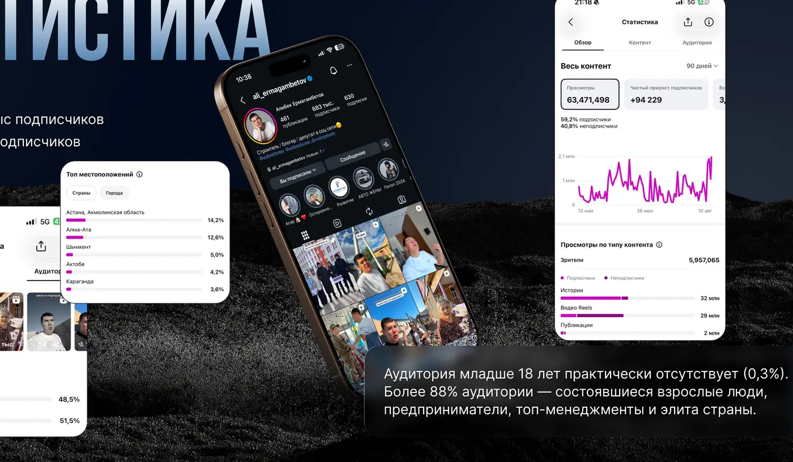
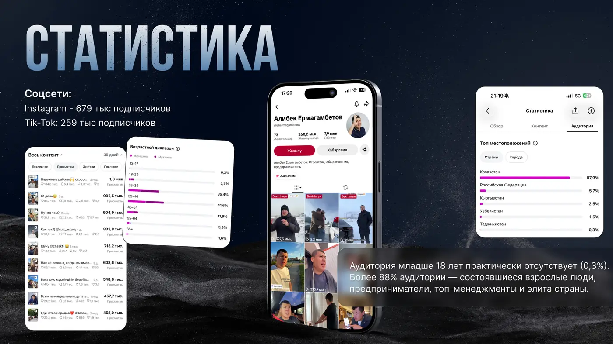

Медиа и инициативы
Влияние,
которое превращается в действие.
Медиа, сотрудничество и общественные проекты — в одном разделе: от рекламных интеграций до реальных инициатив сообщества.

Сотрудничество
Выберите формат обращения.
Заказать рекламу
Reels, Stories, нативные интеграции и амбассадорство.
Заполнить бриф → MEDIA / COLLABПредложить сотрудничество
Коллаборации, интервью, подкасты и спецпроекты.
Предложить формат → MEDIA / EVENTПригласить на мероприятие
Форумы, выступления, деловые и публичные события.
Отправить приглашение →Платформы
Две основные точки контакта
Аудитория
Взрослая, платежеспособная, вовлечённая.

По медиакиту, аудитория младше 18 лет практически отсутствует. Основной фокус — состоявшиеся взрослые люди, предприниматели и топ-менеджмент.
Посмотреть форматы сотрудничества →Инициативы
Когда сообщество строит вместе.
Предложить социальный проект
Идея, объект или инициатива, которую можно реализовать вместе.
Предложить → SOCIAL / MATERIALSПредоставить материалы
Строительные материалы, мебель, оборудование и другие позиции.
Принять участие → SOCIAL / WORKSВыполнить работы
Подряд, монтаж, отделка, логистика и специализированные услуги.
Предложить помощь → SOCIAL / PARTNERСтать партнёром проекта
Комплексная поддержка и долгосрочное участие.
Стать партнёром →
Актуально
Народное строительство
Текущий проект для поставщиков, подрядчиков и компаний, готовых предоставить материалы, работы или услуги.
Открыть проектРеализованный кейс
Дом «Асар»
Связаться
Есть бренд, идея или предложение?
Выберите нужное направление и отправьте заявку команде.
Оставить заявку